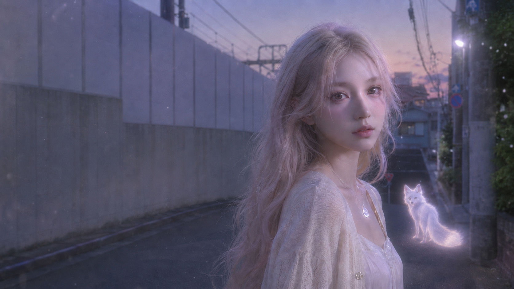
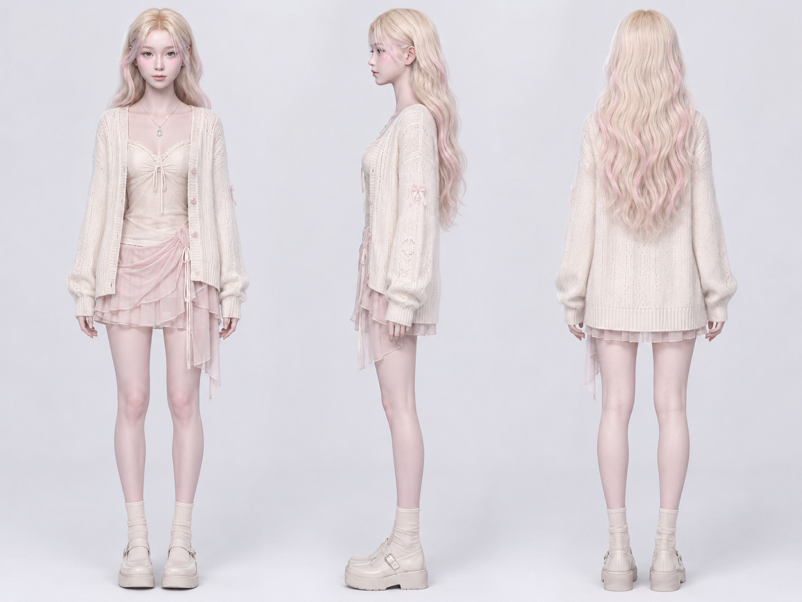
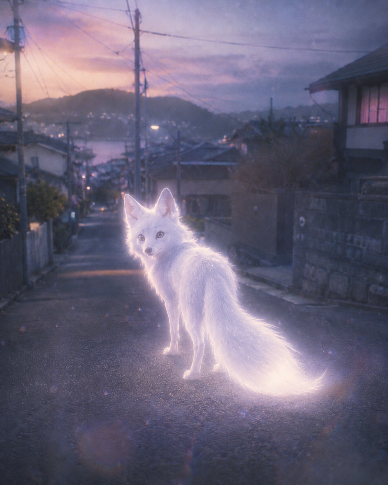
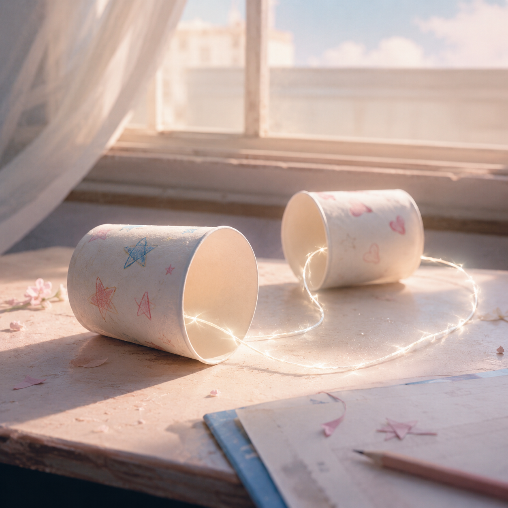
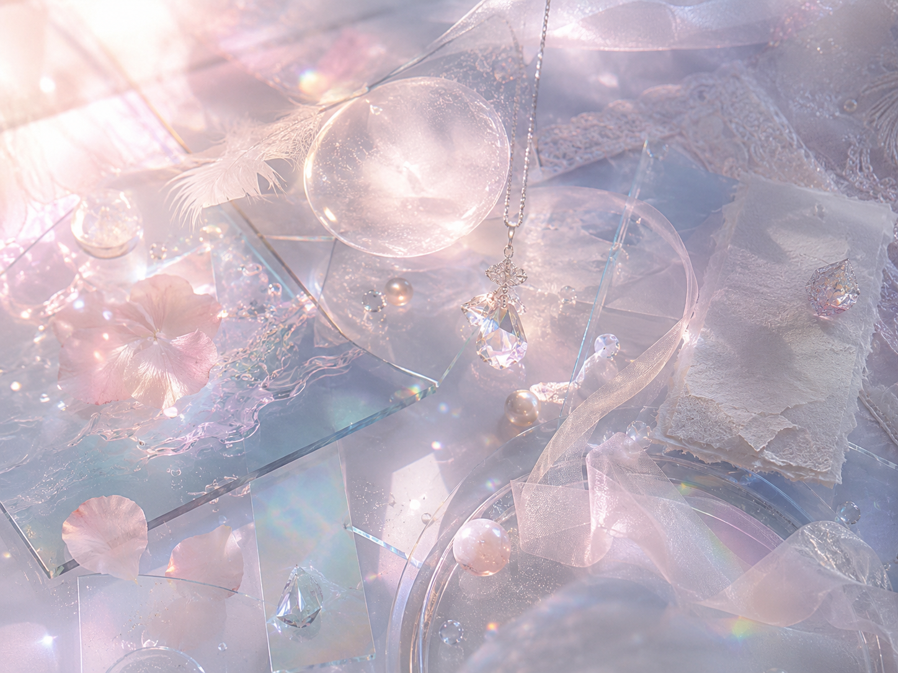

小学毕业那天，Dori 和一个重要的朋友约定用纸杯电话说出最后一句悄悄话。但毕业日太混乱，她只听见断断续续的声音。
多年后，她反复梦见一只熟悉的小狐狸。小狐狸不是那位朋友本人，而是那句没有抵达的告别在 Omera 中留下的情绪残影。
它带 Dori 回到 Omera，不是为了找回过去，而是为了让那段被遗忘的情绪终于被看见、承认和安放。
小狐狸不是回来陪她的人，而是那段没被看见的情绪终于被看见。
AIGC Music Visual Portfolio Project
AI Virtual Singer × Music Visual × Emotional Fantasy IP
一个关于被遗忘的情绪，如何在声音与影像中重新被看见的 AIGC 音乐影像企划。

01 / Concept
《Dori / Omera》是一个以 AI 虚拟歌手 Dori 为核心的音乐影像企划，融合 AI 音乐、虚拟人 IP、AIGC 视觉、AI 漫剧与情绪奇幻叙事。

02 / Character
Dori 是现实中的女大学生，也是虚拟舞台上的 AI 歌手。她明亮、乐观、佛系，像一个总能快速恢复的小太阳。
但她并不是没有悲伤，而是习惯把难过忘进潜意识深处。在 Omera 中，她逐渐学会看见那些被遗忘的情绪。
03 / Worldbuilding
Omera 不是普通梦境，也不是异世界。它是由潜意识、未完成的告别、未说出口的话、被遗忘的情绪共同凝结成的情绪共鸣空间。
梦只是进入 Omera 的入口。在这里，冻结的情绪会以场景、声音、物品和人物残影的形式出现。

04 / Story Arc
小学毕业那天，Dori 和一个重要的朋友约定用纸杯电话说出最后一句悄悄话。但毕业日太混乱，她只听见断断续续的声音。
多年后，她反复梦见一只熟悉的小狐狸。小狐狸不是那位朋友本人，而是那句没有抵达的告别在 Omera 中留下的情绪残影。
它带 Dori 回到 Omera，不是为了找回过去，而是为了让那段被遗忘的情绪终于被看见、承认和安放。
小狐狸不是回来陪她的人，而是那段没被看见的情绪终于被看见。


05 / Art Direction

白金长发、淡粉能量高光、灰蓝眼睛、甜酷科技服装

月光花园、梦的背面、情绪海岸、星光通道

玻璃、雾气、粒子、柔光、轻微故障感

粉白、银蓝、灰紫、浅金、透明感
06 / Sound
Dori 的声音是清透、甜美、带呼吸感的少女声线，但情绪底色中有一点疲惫、破碎和自我保护。
音乐方向以 Magical Synth-Pop、Dream Pop、Teen Pop-Punk、lo-fi R&B 为主。作品不只追求好听，也要服务于角色、剧情和影像表达。
Demo Player
07 / Video
08 / Production Pipeline
本项目重点展示创作者如何以“制作人”身份统筹音乐、角色、视觉、叙事和 AI 工具，而不是单纯完成某一个执行环节。
09 / Portfolio Value
《Dori / Omera》不仅是一个虚拟歌手设定，也是一套 AIGC 音乐影像内容生产实验。它展示了创作者在音乐审美、角色 IP、情绪叙事、AI 视觉、短视频内容和项目统筹上的综合能力。
Let forgotten emotions be seen again through sound and vision.
让被遗忘的情绪，在声音与影像中重新被看见。